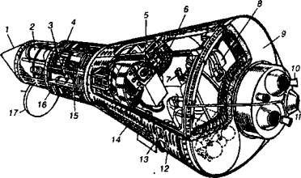

Продолжение пилотируемых полетов
Увлекшись судьбой Ю. А. Гагарина и деталями его первого полета, мы лишь вскользь упомянули о технической надежности, точнее — ненадежности первых космических кораблей. А просчеты и ошибки между тем продолжали накапливаться. Но их зачастую подвергали не анализу, а замалчиванию, забвению — победителей, как известно, не судят. В результате же случались разного рода казусы и происшествия, впрочем, не только у нас…
АМЕРИКАНЕЦ ЧУТЬ НЕ УТОНУЛ… Понимая, что они проигрывают в космической гонке, американцы постарались извлечь максимум пропагандистского шума из полета своего первого астронавта.
Весенним днем 5 мая 1961 года в присутствии свыше четырехсот представителей прессы, радио и телевидения многих стран на мысе Канаверал был произведен старт ракеты «Редстоун». Около 45 млн американцев следили за полетом Шепарда благодаря радио- и телетрансляции.
Поднявшись на высоту 180 км, — астронавт начал постепенно спускать аппарат, чтобы направить его в заданный район посадки. Полет закончился благополучно, но не шел ни в какое сравнение с полетом Ю. А. Гагарина.
Тем не менее в официальном сообщении США по поводу этого события, в частности, говорилось, что «успех суборбитального полета Шепарда принес огромную радость и удовлетворение астронавтам», а также правительству страны.
Наращивая первый успех, 21 июля 1961 года астронавт Вирджил Гриссом повторил полет Шепарда.
Однако, как и при подготовке к запуску Ю. А. Гагарина, на «Меркурии» тоже возникла проблема с закрытием люка. В последний момент оказалось, что один из болтов сломан. Но тут, чтобы не задерживать запуск, руководители полета решили отправить корабль в космос без этого болта.
Полет, впрочем, прошел нормально. Приключения начались после приводнения корабля в Атлантике. Американцы ведь в отличие от нас предпочитали спускать свои аппараты на парашютах в воду, а не на сушу. Полагали, что посадка в водную среду проходит мягче.
Так вот, благополучно приводнившийся Гриссом, готовясь к переходу на борт авианосца «Рэндольф», спешившего к месту посадки астронавта, вытащил предохранительную шпильку, которая фиксировала кнопку подрыва пиротехнических болтов входного люка. Затем спокойно откинулся на спинку кресла в ожидании спасателей. Но тут раздался глухой хлопок взрыва, и астронавт увидел, как крышка люка вылетела наружу.
Потом, при разборе этой ситуации в НАСА, Гриссом клялся, что он не дотрагивался до кнопки подрыва болтов. Но ему сказали, что он мог сделать это непроизвольно, незаметно для себя, зацепив ее, например, локтем скафандра.
Так или иначе, но люк открылся раньше времени, и первая же морская волна ворвалась в кабину, а вторая наполнила ее до краев. Гриссом кое-как выбрался через люк наружу. К счастью, над ним уже висел вертолет из группы поиска и спасения.
Астронавт отплыл подальше от тонувшей капсулы, чтобы та не утянула и его на дно океана. Однако несчастья на том не кончились. В суматохе аварийного вываливания из капсулы Гриссом забыл закрыть воздушный вентиль, и вода через него стала заполнять скафандр. Когда астронавт понял, в чем дело, было уже поздно — наполненный водой скафандр тянул его на дно. Борясь из последних сил за свою жизнь, Гриссом отчаянно замахал рукой: дескать, спасайте. Но летчики были в полной уверенности, что он приветствует их, и принялись… его фотографировать.
Лишь спустя пару минут они догадались, что дело неладно, и бросили ему спасательный конец с карабином, который Гриссом кое-как зацепил за кольцо скафандра. Так его и выдернули из воды лебедкой.
А вот капсулу, к сожалению, спасти уже не удалось, она ушла на дно Атлантики.
(Но от судьбы, как говорится, не уйдешь. Спустя шесть лет Гриссом погиб при довольно странных обстоятельствах во время очередной тренировки. В отличие от него Алан Шепард в 1974 году благополучно вышел в отставку по возрасту в чине контр-адмирала ВМС и занялся бизнесом.)
ВЕЧНО ВТОРОЙ. Так получилось, что Герман Степанович Титов практически всю жизнь провел в тени. Дублер Ю. А. Гагарина, космонавт № 2, первый в мире проведший в космосе целые сутки, затем как-то начисто исчез из поля зрения прессы.
Ходили даже слухи, что он весьма опасно болен, нахватавшись излучения во время своего полета в радиационных поясах Земли, о существовании которых в то время не знали.

Компоновка космического корабля «Меркурий».
Цифрами обозначены: 1 — носовой конус; 2 — тормозной парашют; 3 — бачок с перекисью водорода для микродвигателей маневрирования; 4 — микродвигатель для управления по тангажу; 5 — экран перископа; 6 — приборная доска; 7 — ручка управления системой ориентации; 8 — кресло астронавта; 9 — теплозащитный экран; 10 — двигатель системы аварийного спасения; 11 — двигатель тормозной установки; 12 — ручка включения системы аварийного спасения; 13 — микродвигатель для управления по крену; 14 — герметичная кабина; 15 — контейнер с парашютами; 16 — микродвигатель для управления по рысканию; 17 — крышка люка в открытом состоянии.
Однако существует и другая версия: дескать, на самом деле он просто был занят делом, о котором в то время было не принято говорить публично. Мало кто знает, что до «Шаттла» и «Бурана» у нас разрабатывалась система «Спираль», предусматривающая челночные полеты в космос. Вот Герман Степанович Титов ею и занимался. Мечтал, как он говорил, «полететь в космос на крылышках».
Но эта программа так и не была завершена. Первый раз тема «Спираль» была прикрыта в 1970 году — военное руководство не поняло тогда перспективы развития этой темы: «У американцев такого нет. А нам зачем надо?»
Когда же спохватились, узнав, что американцы работают над системой «Шаттл», оказалось, что Артем Иванович Микоян — так сказать, вдохновитель и разработчик этой темы — уже умер… Другие люди начали работы по «Бурану».
Впрочем, о многоразовых воздушно-космических кораблях мы поговорим позднее. Пока же скажу, что была в биографии Г. С. Титова и еще одна мало кому известная строка: говорят; Л. И. Брежнев предлагал ему полететь на Луну. Случилось это в 1967 году, накануне 50-летия Октябрьской революции. Титов был на аэродроме, собирался лететь на полигон, где велись летно-испытательные работы по «Спирали», когда его вызвал к себе тогдашний начальник Центра подготовки космонавтов генерал Н. П. Каманин.
Он-т? и сообщил космонавту № 2, что принято постановление Центрального Комитета и правительства: в 1967 году будет восемь пилотируемых облетов Луны.
«Нам некого назначать командирами этих кораблей, — сказал генерал. — Поэтому бросай тему, шторой занимаешься, и переходи на программу Л-1».
Но Титов заупрямился, резонно решив, что, если хоть один из полетов к Луне окажется успешным, вряд ли кто назначит в том же году второй — расходы-то ведь на него огромные. Значит, речь идет не о восьми, а об одном полете. Остальные — дубли.
«Роль дублера меня не устраивает, — прямо сказал Титов. — Можете мне гарантировать, что я назначаюсь первым и единственным командиром облета Луны? Нет? Тогда со своей программы я не уйду».
Герман Степанович подозревал, что с лунной программой далеко не все обстоит так благополучно, как то хотелось бы руководству. И оказался, как известно, прав.
И Титов продолжал заниматься военно-космическими проблемами. Готовил к старту военную орбитальную станцию «Алмаз», участвовал в программе противодействия «звездным войнам». Именно он с коллегами пришел к выводу, что программа СОИ — чрезвычайно сложная и чрезвычайно дорогая система — вряд ли будет реализована на практике. И Советскому Союзу незачем тратить средства на такую же. Если помните, как-то Михаил Сергеевич Горбачев, будучи в США, сказал, что у нас есть ответ адекватный и асимметричный, то есть мы не будем создавать свою СОИ. У нас есть другой вариант ответа на эту самую стратегическую оборонную инициативу.
Что именно представлял собой этот вариант, и поныне составляет военный секрет. В общих чертах можно лишь сказать, что рассматривались возможность уничтожения ракет противника мощными лазерами прямо с земли и некоторые другие возможности…
Но вообще-то Г. С. Титов полагал, что будущее космонавтики — в международном сотрудничестве. Вопреки мнению многих своих коллег, полагавших, что нам надо продолжать держаться за свой «Мир» до последнего, космонавт № 2 как-то сказал, что станция «свои задачи уже десятикратно выполнила! С ее помощью мы такой космический опыт получили, которого ни у кого нет в мире. Зачем американцы на эту станцию летали? Зачем другие на нее стремились? Теперь полученный у нас опыт они перенесут на Международную космическую станцию. Ну, и слава богу».
А вообще Герман Степанович вместе с Юрием Алексеевичем мечтал слетать на Марс.
«Моя давнишняя гипотеза состоит в том, что мы прилетели с Марса, — говорил Титов. — Он в свое время начал интенсивно терять атмосферу, и встал вопрос: куда переселяться? Посмотрели марсиане — Земля более или менее подходит. И вот они создали космические корабли и переселились на Землю… Когда мы прилетим на Марс, то найдем там следы своих предков. Думаю, это случится около 2016 года. Если, конечно, на Земле будут мир и сотрудничество.
Я всегда говорю: мы, люди, все родом из космоса. Космический корабль называется Землей, и он несется в вакууме. Это надо понимать, это надо осознать. Поэтому и отношения нам надо строить так, как строят отношения международные экипажи на наших станциях или вот сейчас на международной космической станции, как они работают, как они понимают друг друга, сотрудничают. Тогда человечество многого добилось бы. Нужно интегрировать усилия во всем мире.
Когда мы с Юрием Алексеевичем Гагариным после первых полетов размышляли о дальнейшей космической судьбе, почему-то оба сходились во мнении, что наша космическая карьера закончится на Марсе, что нам хватит жизни, сил, здоровья для того, чтобы осуществить полет на эту планету. Так мы думали в начале 60-х годов. Но не вышло…»
…Он еще многое собирался сделать для развития и пропаганды нашей космонавтики. Хотел, чтобы нынешние мальчишки и девчонки, как школьники 60-70-х годов XX века, снова рвались в космонавты. Старался в меру сил помочь новому поколению нашего космического корабля под названием «Земля» взять в будущее все лучшее, что имели первые космонавты.
Теперь эту эстафету предстоит нести другим. Он прожил 65 лет и целую эпоху…
Начал же он свою космическую биографию в составе первой шестерки космонавтов. И втайне надеялся, что первым будет именно он. Когда же ему отвели роль дублера, стал дожидаться своей очереди. И дождался.
Но он, наверное, не ожидал, что задание, которое ему поручат, будет таким сложным.
А получилось так… Американцы уже наступали нам на пятки. И в середине июля 1961 года Н. С. Хрущев пригласил к себе на ялтинскую дачу С. П. Королева. Они вместе купались, загорали, но с «прогулки» в Крым главный конструктор вернулся с новым заданием — подготовить в начале августа запуск космонавта на сутки.
Отказаться от осуществления такого полета Королев не решился. Н. С. Хрущев уже не раз намекал ему, что в любое время может заменить его на посту Главного конструктора В. Н. Челомеем, к которому относился с особой симпатией и у которого работал его сын.
Так перед Королевым и его командой враз вырос целый ворох проблем. Во-первых, единственная тормозная двигательная установка на «Востоке» могла терять свою надежность при длительном пребывании в космосе; никто не мог дать гарантию, что через сутки она будет работать нормально.
Во-вторых, длительные космические полеты вызывали и у врачей большое беспокойство. Они, например, предсказывали, что в невесомости у космонавтов возникнет космическое укачивание, сопровождающееся периодическими приступами рвоты, которые могут парализовать волю и лишить способности к разумным действиям.
Если при этом, например, на борту выйдет из строя автоматическая система управления или возникнет какая-нибудь другая неполадка, требующая вмешательства космонавта, то может произойти трагедия.
Еще медики опасались, что из-за отсутствия веса у космонавта в полете ослабнут мышцы, поддерживающие глазное яблоко, и оно попросту вывалится из глазницы. Да и вообще трудно было предположить, какие «сюрпризы» ожидают человека в длительном космическом полете.
Однако отступать было некуда. И Королев снова пошел на риск. Причем если при старте Гагарина специалисты оценивали шансы на благополучное окончание полета примерно в 50 процентов, то тут уж речь шла о сорока и менее процентах…
Тем не менее корабль «Восток-2» стартовал 6 августа 1961 года. Причем ракета так сильно вибрировала при старте, что у Титова даже стала трястись голова. Но самым плохим оказалось не это и даже не перегрузки. Как только корабль оказался в невесомости, у космонавта нарушилась пространственная ориентация — появилась иллюзия того, что расположенная перед ним приборная доска передвигается вверх, а он смотрит на нее снизу. Правда, вскоре иллюзия исчезла, доска вернулась на место.
Зато на четвертом витке у космонавта и вправду возникли симптомы космического укачивания. Ему стало трудно водить глазами, шевелить головой. На шестом витке появилась тошнота. Она переходила в рвоту после каждого принятия пищи (Титов на орбите ел дважды).
Наконец, время от времени в глазах космонавта возникали вспышки. Только много позже после этого полета специалисты нашли объяснение этому явлению — так сетчатка глаза реагирует на попадание в нее частиц космического излучения.
И все-таки Титову удалось держать себя в руках. Он даже поспал на орбите в скафандре, в неудобной позе — полулежа, когда руки в невесомости всплывали вверх…
Герман Степанович сделал все, что от него требовалось, и доставил на Землю много ценной информации.
АМЕРИКАНЕЦ ЛЕТИТ ВОКРУГ ЗЕМЛИ. В США тем временем заканчивалась подготовка первого орбитального полета. Однако дата запуска на орбиту Джона Гленна не раз переносилась по техническим причинам. Сначала сроки запуска были сдвинуты на начало 1962 года, а через три дня после Нового года НАСА объявило о переносе запуска с 16 января на 23 января. Но и в назначенный день метеорологические условия не позволили осуществить запуск, и его перенесли на 27 января. В назначенный срок Гленн в течение пяти часов ожидал пуска, находясь в кабине своего корабля, но его опять отложили, причем всего за двадцать минут до назначенного старта.
В конце января было объявлено, что запуск состоится 18 февраля. Следить за полетом должны были 24 корабля, более 60 самолетов и другие технические средства. Были задействованы в общей сложности 18 тысяч человек. Но в назначенный день погода вновь оказалась плохой, и Гленна утром даже не стали будить.
На следующий день, 19 февраля, утро выдалось солнечным, но пуск опять перенесли — с 2 часов 20 минут на 20 часов 2 минуты по Гринвичу. А в 5 часов 30 минут возникли неполадки в системе управления ракетой, на устранение которых ушло 135 минут. Лишь после шести часов ожидания Гленн получил приказ занять свое место в кабине «Меркурия». Но как только он оказался на борту корабля, выяснилось, что микрофон на его гермошлеме не работает, пришлось чинить и его.
Наконец бригада рабочих начала закручивать болты на крышке входного люка. И тут опять обнаружилось, что один из семидесяти болтов сломан. Еще сорок минут рабочие меняли злополучный болт, но, когда все было готово, возникла новая проблема. Длительная задержка привела к чрезмерному испарению кислорода в баках ракеты, и потребовалась их дозаправка.
Наконец в 21 час 47 минут была подана команда на запуск двигателей, и полет начался. Пульс у астронавта достиг 110 ударов в минуту. Впереди ждала неизвестность. Причем если благополучный полет Титова снимал у Гленна многие причины для беспокойства за свое здоровья, то от ракеты-носителя и «Меркурия» можно было ожидать всего.
Подъем между тем проходил спокойно. Перегрузка переносилась даже легче, чем в центрифуге.
После выхода на орбиту Гленн воскликнул: «Ох, какой потрясающий вид!» Он полюбовался освещенным солнечными лучами океаном и обратил внимание на то, что имеется цветовое отличие холодной и теплой воды в том месте, где течение Гольфстрим смешивалось с более холодными водами.
Покончив с лирическим отступлением от программы, астронавт приступил к выполнению программы экспериментов. Так, он несколько раз сильно тряхнул головой и убедился, что это не вызвало болезненных ощущений и каких-либо галлюцинаций.
Он провел съемку панорамы Земли через иллюминатор, и, когда уронил камеру, ему показалось естественным, что она не упала, а продолжала висеть в воздухе. Примерно через сорок минут после старта началась первая для Гленна космическая ночь. Он описал и ее: «Орбитальный закат потрясающий… действительно прекрасный, чудесный вид».
Затем астронавт попробовал поесть, и это не вызвало у него затруднений. Пища была упакована в специальные тюбики, и он выдавливал их содержимое прямо в рот.
Полет проходил нормально, пока Гленн вдруг не увидел через иллюминатор роя мелких светящихся частиц, окруживших его аппарат. «Я никогда не видел ничего подобного этому!.. — воскликнул он. — Их здесь тысячи!» С Земли поинтересовались, не слышит ли он каких-либо ударов. Астронавт ответил отрицательно и добавил, что их скорость по отношению к аппарату примерно 5–6 километров в час.
Он предположил, что источником этих частиц является двигатель системы ориентации, работавший на перекиси водорода, и выключил его, но каких-либо изменений не заметил. Между тем Солнце встало над горизонтом, и в его лучах частицы исчезли. Наблюдения пришлось отложить. А потом стало и вообще не до них…
Появились сбои в автоматике стабилизации корабля. Гленну пришлось вручную развернуть аппарат на двадцать градусов вправо, чтобы обеспечить правильную ориентацию. Но после этого аппарат начал дрейфовать в другую сторону, и астронавт снова был вынужден возвращать его в исходное положение.
Пока он боролся с возникшей неполадкой, в Центре управления полетом обнаружили и еще один источник неприятностей. По данным телеметрии, получалось, что замок, который удерживал в компактно сложенном состоянии надувной мешок, амортизирующий удар о воду при посадке, оказался открытым. А это было весьма худо, поскольку к нижнему краю сложенного гармошкой мешка крепился теплозащитный экран, защищавший конструкцию от перегрева при спуске в атмосфере. К теплозащитному же экрану, в свою очередь, с помощью металлических строп крепился тормозной блок, состоявший из трех твердотопливных двигателей.
Таким образом, посадка могла пойти не в штатном режиме. После того как тормозные двигатели отработают свое, их положено сбросить. Но если сделать это при открытых замках, они могут утащить за собой и теплозащитный экран. Тогда сгорит не только надувная подушка, но и, пожалуй, весь спускаемый аппарат…
Но Гленну о том не сказали, позволив ему пока заниматься разгадкой тайны появления пылевых «светлячков». Однако шел уже третий виток вокруг Земли, пора было готовиться к посадке, и Гленну сообщили все. Правда, оператор постарался успокоить астронавта, добавив, что сведения о неисправности пока предварительные. Может, на самом деле замок все же закрыт… И порекомендовал для проверки поставить переключатель посадочного устройства в автоматический режим. Если при этом на пульте в кабине загорится контрольная лампочка — значит устройство не работает. С замиранием сердца Гленн щелкнул нужным тумблером, и, ко всеобщей радости, зловещий огонек не зажегся.
У всех несколько отлегло от сердца. Однако окончательной уверенности в исправности тормозного блока все же не было. Посовещавшись, специалисты предложили Гленну не сбрасывать тормозную установку после окончания ее работы. В этом случае удержится на корпусе посадочной капсулы и теплозащитный экран. Но оставить установку можно было лишь при условии, если все три двигателя отработают свое в нормальном режиме. Если хотя бы один из них не включится, то тащить потом вниз заряд взрывчатки, из которой, по существу, и состоял твердотопливный тормозной двигатель, весьма опасно. Отстрел двигателей станет неизбежным.
За тридцать секунд до включения двигателей торможения Гленна предупредили: «Джон, оставь тормозную установку на весь период прохождения над Техасом». Но астронавт, занятый предспусковыми хлопотами, пропустил это предупреждение мимо ушей, ведь индикация показывает, что все нормально. Но когда была подана команда на включение двигателей торможения, к ужасу специалистов, заработал лишь один из них. И лишь спустя какую-то долю секунды включился второй и, наконец, третий.
После окончания работы двигателей астронавт попросил у станции слежения в Техасе разрешение на сброс тормозных двигателей. А в ответ еще раз услышал рекомендацию не отстреливать двигательную установку до окончания спуска. И до него в полной мере стало доходить, какая опасность ему грозит…
Но делать было нечего, процесс торможения остановить уже нельзя. Начинался самый трудный участок спуска с критическими тепловыми нагрузками. Связь с Землей пропала из-за ионизированного слоя воздуха, окутавшего аппарат. И тут астронавт услышал какой-то странный звук, а затем и увидел в иллюминатор, как одна из сорвавшихся строп, поддерживавших тепловой экран, затрепетала в потоке воздуха. Затем мимо пронесся какой-то бесформенный предмет.
«Кабина разваливается!» — мелькнуло в голове. Но, на его счастье, экран все-таки удержался на месте и выполнил свою задачу. Но из-за того, что на орбите Гленну пришлось корректировать положение аппарата, расход топлива управляющего двигателя оказался выше нормы, и его практически не осталось, чтобы теперь скорректировать траекторию снижения. Аппарат начало раскачивать, казалось, еще секунда — и он начнет беспорядочно кувыркаться.
Его спасло то, что парашютная система сработала несколько раньше намеченного времени. Стабилизирующий парашют прекратил раскачку, а основные купола обеспечили более-менее плавный спуск. И хотя из-за неисправного мешка-амортизатора посадка вышла более жесткой, чем планировалось, Гленн был рад плюхнуться в воду. Теперь уж он, точно, не сгорит…
А еще через 17 минут астронавт был уже на борту спасательного военного корабля. Медленно вылез из скафандра и сказал, ни к кому особо не обращаясь: «Жарковато все-таки сегодня…»
ИХ ВТОРОМУ «ОРБИТАЛЫДИКУ» ТОЖЕ НЕ ПОВЕЗЛО… В марте 1962 года было объявлено, что второй в США орбитальный полет совершит Малколм Карпентер.
Старт опять-таки несколько раз откладывался, и только 24 мая ракета благополучно вывела «Меркурий» на орбиту Земли. Этот полет проходил спокойнее предыдущего. Астронавт рассмотрел из космоса дороги, пыль над Африкой, освещенные города Австралии. Для лучшего обзора Карпентер активно менял положение корабля на орбите и за один только первый виток вокруг Земли израсходовал больше половины запаса топлива.
Так же, как и Гленн, он видел летающие светящиеся частицы. Сначала он предположил, что это замерзшие частички газа, вылетавшие из двигателей системы ориентации. Однако, когда аппарат в очередной раз оказался в тени Земли, Карпентер случайно слегка ударил по крышке люка. Тут же вокруг корабля поднялся рой «светлячков», и астронавт понял: это пылит покрытие самой капсулы.
А дальше опять начались приключения. Сначала отказала система терморегулирования скафандра, и астронавту стало очень жарко. Перед самым торможением аппарата выяснилось, что кончилось топливо в баке для ручного управления. А чтобы автоматика сработала должным образом, нужно было правильно сориентировать ее. И тут выяснилось, что данные оптического перископа и индикатора направления не совпадают между собой.
Пока астронавт пытался каким-то образом исправить положение, автоматически сработали двигатели торможения и «увели» аппарат на 25 градусов вправо. Это привело к увеличенному расходу топлива в системе автоматической стабилизации, и в баках раньше времени кончилось топливо. Опять-таки аппарат начало раскачивать, и спасла его, как и предшественника, парашютная система, введенная в строй чуть раньше срока. Однако из-за этого аппарат не попал в расчетный район, где его ожидали суда поиска и спасения, отклонившись на 400 км.
Карпентер оказался один в открытом океане.
Тем временем в Центре управления началась паника. Многие подумали, что аппарат сгорел в атмосфере. В эфире прямой трансляции даже прозвучал осторожный комментарий одного из руководителей полета, Вальтера Кронкайта: «Я боюсь, что мы можем потерять астронавта».
К счастью, все обошлось. Вертолеты обнаружили капсулу Карпентера через три часа после приводнения.
Америка встречала его как героя, но руководители НАСА были им крайне недовольны за перерасход горючего на орбите и самодеятельность при спуске.
Карпентер был очень обижен, считал эти обвинения несправедливыми. Тем не менее в космос он больше так и не полетел, хотя продолжал работать в НАСА по программе «Меркурий», а позже и по программе «Аполлон». Однако в 1969 году после автомобильной катастрофы он был вынужден уйти в отставку по состоянию здоровья.
ХИТРОСТИ ГРУППОВОГО ПОЛЕТА. Н. С. Хрущеву между тем нужны были все новые успехи в космосе.
И в космос были запущены «Восток-3» и «Восток-4», пилотируемые, соответственно, А. Н. Николаевым и П. Р. Поповичем. Не имея возможности в короткие сроки создать нечто принципиально новое, Королев и его сподвижники, как у нас говорилось, прибегли к тактической хитрости. «Восток-3» был запущен 11 августа 1962 года, а «Восток-4» — ровно через сутки. В итоге на орбите корабли оказались поблизости, на расстоянии 5 км друг от друга. Это тут же было обозначено как «групповой полет». Таким образом, как бы делался намек: наши корабли имеют настолько широкие возможности маневрирования на орбите, что способности сближаться друг с другом даже на небольшие расстояния.
На Западе с тревогой восприняли эту новость. Ведь, по существу, она обозначала: в случае необходимости русские способны пойти на абордаж. Однако на самом деле устройств маневрирования и стыковки на кораблях не было — миру продемонстрировали чистой воды блеф.
ЗАВЕРШЕНИЕ ПРОГРАММЫ «МЕРКУРИЙ». Американцы ответили на наш демарш полетом Уолтера Ширры, стартовавшего 3 октября 1962 года. А полгода спустя, 14 мая 1963 года, в космос полетел и Гордон Купер.
Оба полета прошли без особых происшествий, хотя и не совсем уж гладко. Так, при старте Ширры ракета-носитель сразу же после запуска вдруг закрутилась вокруг своей продольной оси по часовой стрелке на 180 градусов, а на орбите его ждала настоящая сауна из-за отказа (в какой уже раз?!) системы терморегулирования скафандра.
Купер обнаружил в своем скафандре ряд неисправностей. А кроме того, на его корабле вышла из строя система автоматического управления спуском, и пришлось садиться вручную. Тем не менее Купер провел в космосе 34 часа 19 минут, установив очередной рекорд США.
Таким образом, программа «Меркурий» была исчерпана. Для дальнейшего освоения космоса был необходим новый корабль, обладающий более широкими возможностями. «Такой корабль под названием „Джемини“, что в переводе означает „Созвездие Близнецов“, будет готов только к началу 1964 года», — объявило руководство НАСА.
Таким образом, из семерки первых американских кандидатов в астронавты в космосе не побывал лишь Доналд Слейтон. Во время одной из тренировок в августе 1959 года врачи обнаружили у него шумы в сердце и отстранили от полетов по медицинским показателям.
Однако Слейтон не пал духом. Длительное время он руководил отделом летных кадров НАСА, потом службой подготовки экипажей в Центре пилотируемых полетов имени Л. Джонсона, поддерживая физическую форму и периодически проходя медкомиссию. И врачи в конце концов сдались. В марте 1972 года Слейтон был восстановлен в отряде астронавтов и спустя три года совершил полет на корабле «Аполлон» по программе ЭПАС («Союз»-«Аполлон»).
МУЖЧИНА И ЖЕНЩИНА. К лету 1963 года Н. С. Хрущеву потребовались новые пропагандистские акции. Кубинский кризис сильно подорвал реноме советской политики на мировой арене. Надо было хоть как-то поддержать пошатнувшийся авторитет СССР.
С. П. Королев и специалисты руководимого им КБ вновь были отвлечены от работ по «Союзу», чтобы обеспечить исполнение новой затеи. Теперь было решено послать в полет на двух кораблях мужчину и женщину — первую в мире космонавтку.
Расчет был очевиден — такой полет вызовет симпатии женщин мира к нашей стране, а женщины — это половина человечества.
В итоге 14 июня 1963 года стартовал «Восток-5» с Валерием Быковским на борту, а через два дня на «Востоке-6» отправилась в космос и Валентина Терешкова.
И тут не обошлось без происшествий…
Первая накладка произошла уже при закрытии люка в кабине космонавта № 5 В. Ф. Быковского.
«Что случилось тогда, я узнал только после полета, — рассказывал годы спустя сам Валерий Федорович. — Мне сказали: „Будем открывать люк“. А это тридцать две гайки да плюс после закрытия — проверка на герметичность. Открылся люк. С помощью зеркала, расположенного на рукаве скафандра, вижу шест, а на конце его то ли зажим, то ли ключ какой-то. В общем, там, под креслом, что-то щелкнуло, зашуршало, и мне говорят: „Все! Полный порядок!“ Закрыли люк, проверили герметичность…»
Произошло же вот что. Как вы уже знаете, кресло космонавта на первых «Востоках» могло катапультироваться. А это значит, под ним помещался твердотельный ускоритель, который выбрасывал космонавта из кабины, словно снаряд из пушки. Чтобы не произошло самопроизвольного отстрела кресла во время предстартовых испытаний или в момент посадки космонавта, кресло ставилось на предохранительные защелки. Снималась же страховка достаточно просто: надо было потянуть за шнур, и система приводилась в боевую готовность.
На этот же раз все произошло по-другому. Кресло с предохранителей перед самым закрытием люка снимал И. Хлыстов — моряк в прошлом, человек силы недюжинной. Он дернул за шнур и перестарался — одна половинка оказалась у него в руках, другая — под креслом. Посмотрели на датчики: защелки вошли в пазы направляющих, кресло освободилось от предохранителей, но шнур не высвободился. Проверили еще раз: автоматика подтвердила — кресло освобождено от предохранителей. Все же решили доложить Королеву.
Конструктор кресла В. Сверщек спустился с верхотуры вниз, но доложил не Королеву, как положено, а Главному конструктору своего КБ С. Алексееву. Тот поначалу посчитал, что ничего страшного не произошло, но ближе к моменту старта все-таки заволновался. Ведь кресло отстреливается с большой силой. А ну как шнур за что-либо зацепится?!
Королеву все-таки доложили… Тотчас последовала команда: «Вскрыть люк!» А поскольку шел уже предстартовый отчет времени, Сергей Павлович пообещал: «За каждую сэкономленную секунду — тысячу рублей!»
Злополучный шнур извлек все тот же Иван Хлыстов, а всего бригада из восьми человек перекрыла нормы открытия-закрытия люка на 13 минут.
…Снова на старте объявили получасовую готовность. И опять накладка: выявлено отклонение от нормы в системе гироприборов. Снова доклад Главному. Королев со специалистами проанализировал ситуацию: отклонения от оси гироскопа было незначительным, но Сергей Павлович остался непреклонным:
«Объявить перенос старта на два часа. Заменить весь блок, повторить все испытания…»
В общем, Быковский просидел в своем кресле около 5 часов, прежде чем ракета все-таки взлетела.
Со спуском тоже, как и в случае с Гагариным, были осложнения. Вот какие подробности вспоминал сам В. Ф. Быковский:
«Тормозная двигательная установка включилась без хлопка. Так, легонький толчок получился, небольшой шум. Засек время, отработал 39 секунд, доложил на Землю об окончании работы двигателя, стал ждать разделения. Секунды идут, смотрю на часы, идут вовсю. Табло „Приготовиться к катапультированию“ не загорается. А ведь разделение должно идти через 20 секунд после отработки двигателя. А разделения нет. После остановки тормозной установки полетели хлопья, как снег. Во всех иллюминаторах это видно…
Проходит минута, вторая, а глобус идет нормально, показывает местоположение над земной поверхностью, потому вижу: прохожу экватор, затем подхожу к Каспийскому морю… И вот тут началась болтанка. Ничего не могу понять. Я говорю на магнитофон, не успеваю говорить, так вращается корабль.
Первое, что я увидел в правый иллюминатор, — лохмотья такие блестящие висели из термоплаты. Там торчат металлические детали и начинают нагреваться красным цветом… Что же делать? И в этот момент пошла раскрутка. Сначала медленно, потом стало сильно крутить. Раскрутка пошла с большой скоростью, и я не мог определить скорость вращения. Началось разогревание приборного отсека, стало мотать: невозможно было понять, как крутило меня…
Уже было Каспийское море, середина его, за бортом бушевало настоящее пламя. И здесь произошел один рывок, другой — и все резко прекратилось. Загорелось табло: „Приготовиться к катапультированию“. Значит, все: разделение произошло. Так прошло минут десять. Посмотрел на глобус-середина Каспийского моря. Ну, думаю, куда же я теперь сяду? Стал смотреть за кораблем. Он качался, быстро качался. Я включил киноаппарат. Снимаю, перегрузок пока не чувствую, только вращение корабля ощущаю. А потом стали постепенно увеличиваться перегрузки, медленно. Корабль стал как бы постепенно успокаиваться. Я смотрел вниз: видна вода, море видно. Вода мелькает, облака белые и суша. Наблюдаю, высоко ли до облаков. Потом вода кончилась…
Дали знать себя перегрузки. Вижу плохо. В тазах все темнеет, чувствую, как исказилось лицо, тяжесть давит на все тело. Какое-то время давило сильно, потом начался спад перегрузок. Корабль вращался все меньше и меньше.
Я стал ждать катапультирования… В правый иллюминатор видно обожженное стекло и сквозь него — землю. Смотрю и пытаюсь определить расстояние до земли и облаков. Тщетно. Значит, надо ждать. Пора катапультироваться. Я сжался покрепче, приготовился, как говорил Гагарин: „Не надо смотреть назад, когда люк отскакивает“. Я не смотрю, гляжу на приборную доску.
Мгновенно услышал хлопок и увидел свет на приборной доске. Тут же меня вытолкнуло из кабины. Между ног увидел свой корабль, он вниз пошел. Крутится и падает. Какие-то ленточки висят, и пошел, пошел…
Сам висел на тормозном парашюте. Потом открыл основной парашют. Меня дернуло, и я зубами ударился о скафандр. Парашют открылся… Кресло левее меня падало вниз. До земли еще высоко, далеко. Степь. Леса кучками небольшими. Озеро вроде — болотистое, желтого цвета. Вот, думаю, не дай бог туда сесть…
Дышать тяжело: воздух горячий идет из регенерационного патрона. Я открыл шлем и вдохнул воздух, приятный степной воздух. Увидел населенный пункт. Отдышался. И пошел вниз…»
Причины раскрутки, похоже, проанализированы по-настоящему не были. Не до того было — конструкторы изо всех сил старались поспеть за выполнением очередных заданий партии и правительства. Американцы по-прежнему наступали на пятки, и правительство все время требовало от Королева: «Давай что-нибудь новенькое…»
ЭПОПЕЯ ТЕРЕШКОВОЙ. Первой в мире космонавтке пришлось и того хуже. Понимая, что женский организм во многом отличается от мужского, медики настояли на том, чтобы на полет были назначены сразу три кандидатки — основная и две дублерши.
При этом опять-таки Никита Сергеевич, похоже, спутал все карты. Основная кандидатка была назначена не по степени подготовленности, а по анкетным данным — Хрущеву нужен был человек пролетарского происхождения. Бывшая ткачиха по этим параметрам подходила. Все остальное посчитали делом десятым.
В итоге Терешкова сразу же после старта начала страдать космической болезнью в самой тяжелой форме. Ее укачало так, что ни о каком выполнении программы не могло быть и речи. Она была поставлена на грань психологической устойчивости, очень плохо себя чувствовала весь полет.
После приземления она была в таком состоянии, что ни о какой официальной киносъемке и речи быть не могло. Тогда пошли на очередной подлог. Кабину почистили, космонавтку привели в чувство, вымыли, сделали ей прическу и лишь после этого зафиксировали на кинопленку, как она элегантно покидает кабину после приземления.
Весь этот «цирк» имел по крайней мере два последствия. Когда Королеву доложили все подробности полета, он буркнул: «Бабам в космосе делать нечего», — и велел распустить женский отряд.
Сама же В. В. Терешкова и по сей день не любит вспоминать о тех событиях и практически не дает интервью на космические темы.
Тем более что космос в значительной степени изломал и ее личную судьбу. До сих пор ходят слухи, что выдать ее замуж за Николаева придумал все тот же неугомонный Никита Сергеевич.
Брак продержался почти столько же, сколько у руля советского государства стоял сам Хрущев. Потом супруги без лишнего шума развелись, но информация о состоянии здоровья их дочери долгие годы оставалась врачебной тайной.
Сам А. Н. Николаев после этого второй раз так и не женился, умер бобылем. У генерал-майора В. В. Терешковой, говорят, второй муж — тоже генерал…